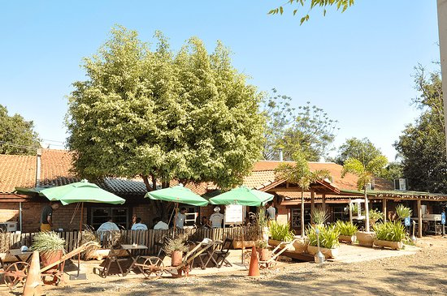
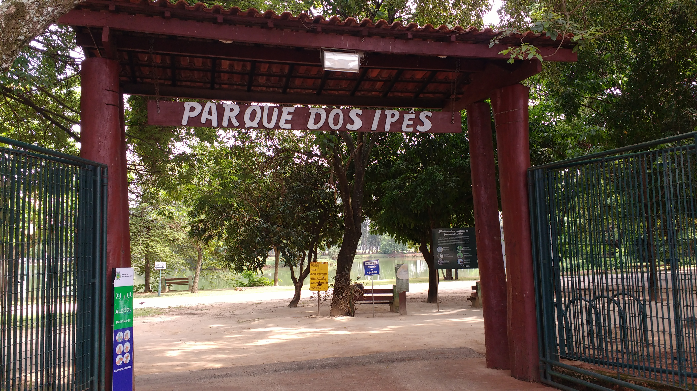
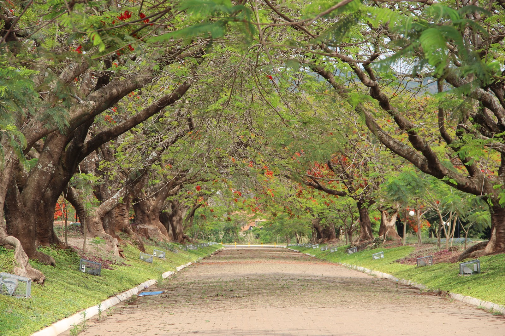

Comer no Rancho da Costela

Um restaurante típico de fazenda. Além da consagrada costela "Mais caminhos", ofertam deliciosos pratos, sobremesas, café premium e chopp de qualidade.
Tudo isso com um ambiente campestre, sereno e acolhedor.
Em atividade desde 1996.
Conheça mais sobre o Rancho da costela visitando sua página no Facebook.
Conheça mais sobre o Rancho da costela visitando sua página no Facebook.
Fazer um piqienique no Parque dos Ipês

Tanto no fim de tarde, quanto aos finais de semana o Parque dos Ipês é sempre um bom local para passar um tempo com a família.
Descubra mais sobre o Parque dos Ipês pesquisando no Google sobre o local.
Descubra mais sobre o Parque dos Ipês pesquisando no Google sobre o local.
Caminhar no Caminho dos Flamboyants

Se exercícios é sempre algo recomendável, ainda mais se for em um local agradável e perto da natureza.
Veja no mapa onde fica esse local.
Veja no mapa onde fica esse local.
Existem muitos outros lugares interessantes na cidade, conheça também:
- Bar Dona Beleza.
- Igreja matriz.
- Teatro municipal Manoel Lyra
- Parque dos Jacarandás
Um guia para você turistar por aqui
Uayna de Souza ©
Uayna de Souza ©